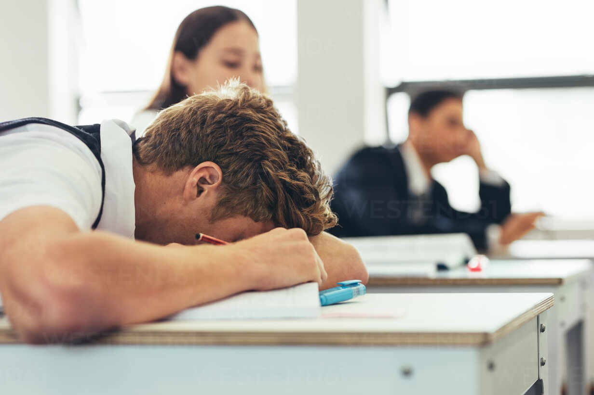

VIVIR EN RESERVA: EL DOBLE SACRIFICIO DEL ESTUDIANTE VILLARREALINO
La encrucijada de los estudiantes que estudian y trabajan: el costo humano de vivir entre la aula y la oficina.
En las aulas de la Facultad de Ciencias Sociales de la Universidad Nacional Federico Villarreal, el cansancio no es una sensación abstracta; es un estado de permanencia. Para el estudiante que divide su día entre un empleo de medio tiempo y la formación profesional, el tiempo mismo deja de ser una medida objetiva para convertirse en un recurso escaso que se agota en el tránsito urbano, el cumplimiento de metas laborales y el esfuerzo de concentración frente al pizarrón.
Frente a esta realidad, nuestro proyecto transmedia no se limita a exponer cifras aisladas ni a narrar testimonios sin sustento. Su valor periodístico radica en construir un puente directo entre los hallazgos de las investigaciones científicas recopiladas en nuestra escaleta y las narrativas audiovisuales desarrolladas a través de nuestro ecosistema multicanal. Cada formato y cada canal responde a un eje temático definido, traduciendo los datos cuantitativos sobre estrés, fatiga y rendimiento en relatos humanos que generan empatía, concientización y sentido de comunidad.
1. La doble jornada y la tiranía de la "pobreza de tiempo"
El primer eje de nuestra investigación aborda la inserción del estudiante villarrealino en el mercado laboral y la consiguiente fragmentación de su rutina diaria. Esta dimensión se despliega a través del reportaje web en la plataforma Wix, que actúa como el lienzo central e interactivo de todo el proyecto.
Esta narrativa web encuentra su reflejo exacto en las evidencias señaladas por Nicolás Schwindt en su estudio sobre jóvenes universitarios trabajadores. Schwindt identifica que el 77.3% de los estudiantes que trabajan percibe que avanza lentamente en su carrera académica, una situación estrechamente vinculada a la falta de afinidad entre el puesto laboral y la especialidad universitaria (73.7%). La nota escrita e interactiva de la web traduce este concepto en la vivencia de la "pobreza de tiempo": un estado de restricción severa donde las horas dedicadas al empleo y al transporte reducen a mínimos críticos las oportunidades de descanso, convivencia o estudio solitario.
Asimismo, los datos de Ordóñez y Solari sobre la realidad peruana respaldan la necesidad de este primer eje. Su estudio demostró que el 38% de los jóvenes trabajadores registra un estrés laboral moderado, demostrando que la necesidad económica o la búsqueda de autonomía conducen al estudiante a asumir cargas operativas que condicionan desde el primer momento su tránsito universitario.
2. El impacto emocional y la dimensión sonora del desahogo
El segundo eje temático explora la salud mental, la sobrecarga cognitiva y las consecuencias psicológicas del desgaste cotidiano. Para abordar esta dimensión íntima, elegimos como soporte el podcast en Spotify, un formato de inmersión auditiva que favorece la confianza y el análisis sin filtros.
En los dos episodios del podcast, la conducción periodística se entrelaza con el criterio clínico de psicólogas invitadas para analizar la transformación del cansancio biológico en fatiga emocional. Esta narración sonora dialoga directamente con la tesis de Chang Lazo acerca del estrés laboral y el Síndrome de Burnout en jóvenes. La investigación científica advierte que la exposición prolongada a dobles exigencias provoca manifestaciones como despersonalización, irritabilidad y agotamiento crónico, donde el sueño ya no logra reparar la energía perdida.
Las reflexiones del podcast, expresadas en frases como "estar más cansado no significa valer más", operacionalizan las advertencias de Chang Lazo y de los estudios sobre desequilibrio entre esfuerzo y recompensa. El audio permite que las alertas clínicas sobre la trampa de la hiperproductividad se transformen en una conversación cercana que valida los sentimientos del oyente y le enseña a identificar cuándo el cansancio habitual se ha convertido en un riesgo para su salud mental.
3. El rendimiento académico y la barrera visual de la atención
El tercer eje investiga cómo el agotamiento acumulado frena el desempeño en el aula y genera temores de rezago. La plataforma asignada para esta vía es Instagram, utilizando carruseles fotográficos de alto contraste e infografías sintéticas para visibilizar lo que denominamos "las horas que no se ven".
Las imágenes en claroscuro publicadas en Instagram capturan la retención exhausta en las clases nocturnas de la UNFV: miradas extraviadas, cabezas reclinadas sobre la carpeta y cuadernos con apuntes incompletos. Esta representación visual sintetiza los datos obtenidos a través del Inventario SISCO de Estrés Académico presentados en los estudios de Arcos Alvaro y colaboradores. Los datos científicos indican que el 66.7% de los estudiantes padece un nivel de estrés académico moderado y un 28.3% registra niveles altos, siendo la sobrecarga de evaluaciones y el tiempo limitado los estresores más dominantes (41.7%).
El fotoperiodismo en Instagram demuestra que el bajo rendimiento o la baja concentración no responden a desinterés ni a falta de vocación, sino a una barrera fisiológica originada por la saturación sensorial tras jornadas de ocho horas de trabajo. Las piezas gráficas traducen las reacciones físicas (63.3%) y psicológicas (58.3%) registradas por la literatura científica en un testimonio visual que dignifica el esfuerzo estudiantil.
4. La experiencia viva, el tránsito urbano y la fuerza comunitaria
El cuarto eje recoge la vivencia cotidiana del estudiante que cruza la ciudad para llegar a clase. Su soporte principal es el videoreportaje documental publicado en YouTube, una pieza audiovisual de seguimiento y cine directo titulada "Un día, dos jornadas".
El documental acompaña físicamente al universitario en el transporte público limeño durante el trayecto de la tarde, registrando el impacto del tráfico, el ruido urbano y el acelerado cambio de mentalidad requerido para pasar del rol de empleado al de alumno. Esta secuencia conecta con las observaciones de Guevara y Torres Sillau sobre las trayectorias universitarias en la educación pública. Ambos autores coinciden en que la falta de seguimiento institucional y la distancia física entre los centros de trabajo y el campus alargan la permanencia académica del estudiante.
Sin embargo, el documental en YouTube no se queda en la denuncia de la sobrecarga. En su segundo y tercer acto, la cámara registra la empatía entre compañeros como una red de contención vital: la compartición de apuntes, el préstamo de trabajos y la flexibilidad en las entregas grupales. La pieza audiovisual demuestra que la resiliencia estudiantil es una construcción comunitaria que sostiene la vocación y el proyecto de vida frente a la adversidad del entorno.
5. La barrera institucional y el canal de fiscalización informativa
El quinto eje examina los canales de contención universitarios y la inflexibilidad de los servicios de soporte. Este contenido se canaliza mediante la sección interactiva en la página web y los códigos QR impresos en afiches distribuidos en el campus, orientados a la Oficina Central de Bienestar Universitario (OCBU).
Esta vía periodística confronta la realidad operativa de la universidad con las recomendaciones de la literatura académica. Investigadores como Guevara sostienen que las instituciones públicas suelen mostrar indiferencia hacia la condición del estudiante trabajador, manteniendo horarios de atención administrativa y médica exclusivamente diurnos. Nuestra sección web y los códigos QR fiscalizan constructivamente este desajuste: mientras la OCBU atiende de 08:00 a 15:30 horas, la mayoría de los alumnos trabajadores labora en ese rango horario y asiste a la universidad por la noche.
El contenido interactivo informa sobre los servicios existentes, pero también analiza las razones del ausentismo en la búsqueda de ayuda: la burocracia, la desinformación y el estigma social. De este modo, la plataforma digital pasa de ser un mero difusor de noticias a un canal de utilidad pública y exigencia de derechos.
6. La autorregulación cotidiana y los contenidos de participación
El sexto y último eje ofrece herramientas prácticas, consejos entre pares y espacios de interacción para sobrellevar el agotamiento diario. La plataforma elegida para esta labor es TikTok, apoyada en Reels verticales de ritmo dinámico.
A través de microvideos utilitarios, la cuenta de TikTok difunde estrategias de organización como la priorización de tareas, técnicas de respiración para desactivar la ansiedad antes de un examen y guías paso a paso para realizar trámites universitarios. Este despliegue aplica operativamente las escalas de afrontamiento del estrés analizadas en el marco teórico de la investigación.
Asimismo, TikTok e Instagram incorporan encuestas semanales y cajas de preguntas que convierten al estudiante en un prosumidor activo. Al responder encuestas sobre cuántas horas durmieron o compartir sus propios consejos para estudiar en la cúster, los alumnos dejan de ser sujetos pasivos de estudio para convertirse en coautores de la narrativa transmedia, fortaleciendo la conciencia colectiva sobre su situación.
Un compromiso periodístico con la comunidad universitaria
La articulación entre nuestros productos audiovisuales y la investigación científica demuestra que la transmediación periodística es una herramienta poderosa para el cambio social. Al conectar las cifras del estrés y la carga laboral con rostros, voces, imágenes y recursos interactivos, el proyecto "A CONTRA TIEMPO" logra visibilizar la encrucijada de los estudiantes de la UNFV que estudian y trabajan.
Lejos de ofrecer una visión derrotista, este reportaje reafirma que detrás de cada jornada agotadora existe una profunda vocación de superación. El ecosistema transmedia sirve así como un espejo fiel donde la comunidad universitaria puede reconocerse, encontrar respuestas prácticas y exigir condiciones académicas e institucionales más humanas y equitativas.
